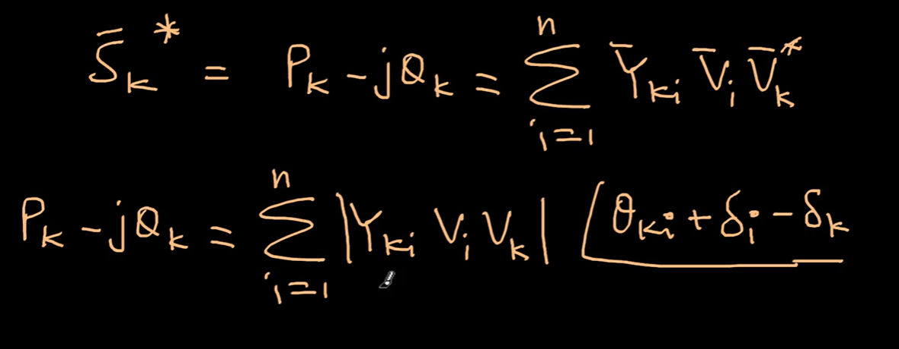
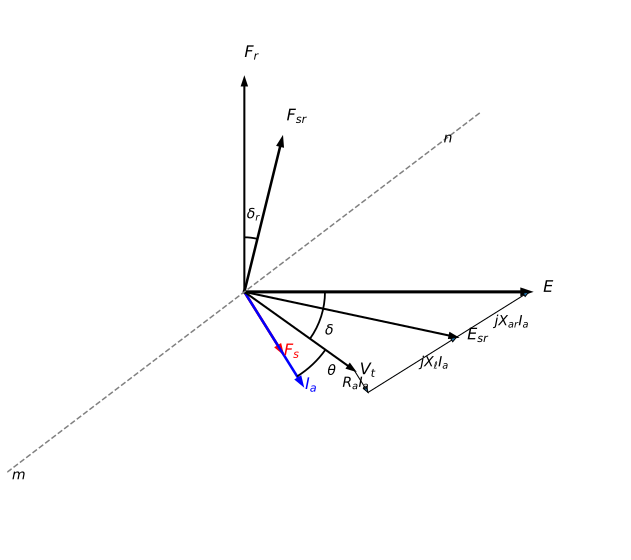
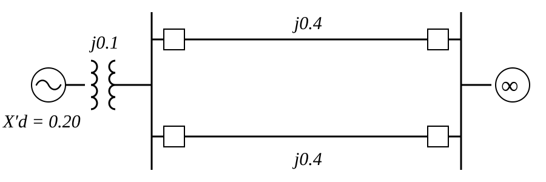
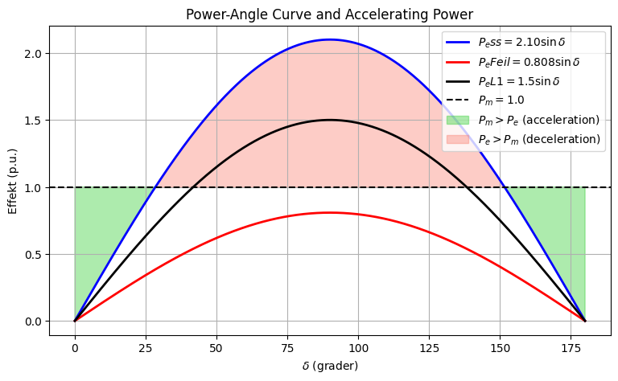

Fra kraftflyt til kraftvinkelligningen (SMIB)#
1. Utgangspunkt: Kraftflytligningen#
Vi starter med den komplekse effekten ved buss \(k\):
Skriver vi alle størrelser på polar form:
får vi
Den reelle delen gir aktiv effekt:
Dette er den vanlige kraftflytligningen.

2. Stabilitetsmodell#
I transient stabilitet flyttes bussene fra terminalspenningene til de transiente interne EMF-ene.
Vi erstatter derfor
slik at
hvor
\(E'_i\) er transient internspenning
\(\delta_i\) er rotorvinkelen

3. To-portmodell#
Anta to maskiner:
E'₁∠δ₁ ---- jX ---- E'₂∠δ₂
Da reduseres summen til
4. Tapsfritt nett#
For klassisk transient stabilitet antar vi
slik at nettet består av rene reaktanser.
Transferreaktansen er
og dermed
slik at
og
Videre er
og siden
forsvinner diagonal-leddet.
Da står vi igjen med
5. Fra cosinus til sinus#
Bruk identiteten
med
Da får vi
6. Definer kraftvinkelen#
Definer den relative rotorvinkelen
Da blir uttrykket
Definer videre
slik at
Dette er den generelle kraftvinkelligningen.
7. Overgang til SMIB#
En infinite bus modelleres som
med konstant vinkel
Systemet blir da
E'∠δ ---- jXtransfer ---- V∠0
slik at
og kraftvinkelligningen reduseres til
hvor
Fysisk tolkning#
Kraftflyt:
Vt∠α ---- jXnett ---- V∠0
Stabilitet:
E'∠δ ---- j(Xd'+Xnett) ---- V∠0
Dermed kan kraftvinkelligningen ses som et spesialtilfelle av den ordinære kraftflytligningen når:
Bussene flyttes til de interne EMF-punktene \(E'\).
Nettet er tapsfritt.
Systemet reduseres til to porter.
Den ene porten gjøres til en infinite bus. ````````
SMIB#

Vi skal i det følgende modellere en feil midt på den nederste av de to paralellinjene, med den hensikt og gjøre en transient stabilitetsanalyse av systemet. Vi har tre tenkte scenario:
Stabilt system
Kortslutning
Selektivitet
Maskinen leverer 1 pu aktiv effekt og både terminalspenning \(V_t\) og infinite-bus spenning ,\(V_{\infty}\) er 1 pu. Alle reaktanser er omgjort til pu verdier på en felles systembase. Beregn kraftvinkelligning ved stabil drift
import numpy as np
X_d = 0.2
T = 0.1
L1 = 0.4
L2 = 0.4
X = T + L1/2
print('Ekvivalentreaktansen er:', round(X,2),'per unit')
Ekvivalentreaktansen er: 0.3 per unit
alpha = np.arcsin(0.3)
print(f"1∠{np.degrees(alpha):.2f}°")
1∠17.46°
Vt = np.exp(1j * alpha)
print(f"Re = {Vt.real:.4f}")
print(f"Im = {Vt.imag:.4f}")
Re = 0.9539
Im = 0.3000
Ia = (Vt - 1) / (1j * X)
mag = np.abs(Ia)
angle = np.degrees(np.angle(Ia))
print(Vt)
print(f"I = {mag:.4f} ∠ {angle:.2f}°")
(0.9539392014169457+0.3j)
I = 1.0117 ∠ 8.73°
print(f"I = {np.abs(Ia):.4f}∠{np.degrees(np.angle(Ia)):.2f}°")
print(f"I = {Ia.real:.4f} + j{Ia.imag:.4f}")
I = 1.0117∠8.73°
I = 1.0000 + j0.1535
E1 = Vt + ((Ia)*(1j*X_d))
print(f"E1 = {round(np.abs(E1),2):.4f}∠{np.degrees(np.angle(E1)):.2f}°")
print(f"E1 = {E1.real:.4f} + j{E1.imag:.4f}")
E1 = 1.0500∠28.44°
E1 = 0.9232 + j0.5000
Totalreaktans#
X_tot = X+X_d
print('Totalreaktansen er:', round(X_tot,2),'per unit')
Totalreaktansen er: 0.5 per unit
P_e = ((np.abs(E1)*1) / (X_tot))
print(round(P_e,3))
2.1
1.05/0.5
2.1
import numpy as np
import matplotlib.pyplot as plt
Pmax_ss = 2.10
Pmax_feil = 0.808
Pmax_L1 = 1.5
Pm = 1.0
delta_deg = np.linspace(0, 180, 1000)
delta_rad = np.radians(delta_deg)
Pe_ss = Pmax_ss * np.sin(delta_rad)
Pe_feil = Pmax_feil * np.sin(delta_rad)
Pe_L1 = Pmax_L1 * np.sin(delta_rad)
plt.figure(figsize=(9, 5))
plt.plot(delta_deg, Pe_ss, 'b', lw=2,
label=r'$P_ess=2.10\sin\delta$')
plt.plot(delta_deg, Pe_feil, 'r', lw=2,
label=r'$P_eFeil=0.808\sin\delta$')
plt.plot(delta_deg, Pe_L1, 'k', lw=2,
label=r'$P_eL1=1.5\sin\delta$')
plt.axhline(Pm, color='k', ls='--',
label=r'$P_m=1.0$')
# Akselerasjon
plt.fill_between(
delta_deg, Pe, Pm,
where=(Pm > Pe),
color='limegreen',
alpha=0.4,
label=r'$P_m>P_e$ (acceleration)'
)
# Retardasjon
plt.fill_between(
delta_deg, Pe, Pm,
where=(Pe > Pm),
color='salmon',
alpha=0.4,
label=r'$P_e>P_m$ (deceleration)'
)
plt.xlabel(r'$\delta$ (grader)')
plt.ylabel('Effekt (p.u.)')
plt.title('Power-Angle Curve and Accelerating Power')
plt.grid(True)
plt.legend()
plt.show()
